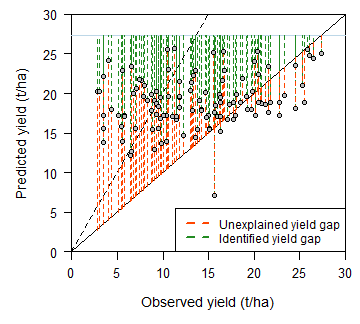

Workflow of Fermont et al. (2009)¶
Tomás Roquette Tenreiro, SISTAGRO
João Vasco Silva, CIMMYT-Zimbabwe
Introduction¶
Boundary line analysis is a powerful concept in agronomy (Webb, 1972) as it can be used to explain yield gaps in farmers’ fields. From a conceptual standpoint, different approaches have been proposed for boundary line analysis over the past decades, which can be grouped in three main methodological families. The first estimates the boundary lines “manually and by eye” (e.g., French & Schultz, 1984). The second relies on statistical methods, encompassing grouping data and fitting ‘splines’, to estimate the boundary line (e.g., Fermont et al., 2009). Lastly, econometric techniques including quantile regression and stochastic frontier analysis have also been used to estimate boundary lines (e.g., Silva et al., 2017).
Herewith, we focused on the boundary line approach encompassing grouping data and fitting of ‘splines’ to farmer field data. The general features of this approach include (1) identification of boundary points, (2) estimation of a continuous function characterizing the boundary points, and (3) yield gap analysis for each factor and across factors. This type of boundary line analysis has been used widely in the past years across a number of crops and geographies (e.g., Casanova et al., 1999; Shatar & McBratney, 2004; Fermont et al., 2009; Wairegi et al., 2010). Its statistical nature (e.g., Fermont et al., 2009) makes it suitable for reproducible research and easy to interpret by agronomists.
The use of the method for yield gap decomposition was best described by Wairegi et al. (2010). After estimating boundary lines for individual production factors, von Liebig’s law of the minimum is used to identify the production factor limiting crop yield most. This is done for each field as Ymin = min(Yx1, Yx2, …, Yxn), where Yxn is the yield predicted with the boundary line for a given production factor. Estimation of Ymin allows identifying the limiting factor to crop yield and decomposing the yield gap into an ‘identified yield gap’ (IYG) and an ‘unexplained yield gap’ (UYG) in each field. IYG is defined as the difference between the water-limited yield and the Ymin. UYG is defined as the difference between Ymin and the reported actual yield.
This workflow documents in a reproducible way the concept of boundary line analysis of Fermont et al. (2009) on the original dataset for cassava cropping systems in Eastern Africa. Fermont et al., (2009) conducted a number of household surveys and on-farm trials in Uganda and western Kenya to unravel the importance of abiotic, biotic and associated crop management constraints to cassava production. Clear boundary lines between cassava yield and growing season rainfall, soil fertility, soil texture, and pest, disease and weed management practices, which were identified as the key constraints to cassava production in East Africa.
Load required R packages¶
First, we need to load the R packages needed to run this workflow.
# package names
packages <- c("splines", "Metrics", "dplyr", "tidyr", "knitr", "reshape2", "ggplot2")
#
# install packages
installed_packages <- packages %in% rownames(installed.packages())
if(any(installed_packages == FALSE)){
install.packages(packages[!installed_packages], repos="http://cran.us.r-project.org", quiet=T)}
#
# load packages
invisible(lapply(packages, function(x) suppressMessages(require(x, character.only=T, quietly=T, warn.conflicts=F))))
Crop field data¶
The first step is to load the crop data to be used for yield gap analysis. The dataset contains measured cassava yields, management practices, and biophysical conditions for a number of fields in Central/Eastern Uganda and Western Kenya (Fermont et al., 2009). The sites were chosen to represent a range of environments and management practices of cassava-based cropping systems in Eastern Africa. In total, 13 different yield-explaining variables (x-variables) were collected for a total number of 122 field-year combinations.
# read .csv file with data
file <- 'https://raw.githubusercontent.com/jvasco323/EiA_BLA_workflow/main/fermont_etal_final.csv'
data <- read.csv(url(file))
#
# list variables of interest for visualization
str(data)
## 'data.frame': 122 obs. of 22 variables:
## $ year : int 2005 2005 2005 2005 2005 2005 2005 2005 2005 2005 ...
## $ Trial : chr "NOT" "NOT" "NOT" "NOT" ...
## $ Site : chr "Nambale" "Nambale" "Nambale" "Nambale" ...
## $ Farm.no. : chr "41" "42" "43" "44" ...
## $ yld_t0 : num 17.8 9.5 33.8 18 18.5 ...
## $ pH_soil : num 5.2 5.3 5.3 5.3 5.2 5.2 5.4 5.2 5.9 5.5 ...
## $ SOC : num 9.66 8.85 9.4 9.72 9.14 ...
## $ totN_soil : num 0.516 0.509 0.539 0.545 0.602 ...
## $ P_soil : num 3.15 2.29 2.36 3.41 3.28 ...
## $ K_soil : num 0.124 0.14 0.124 0.142 0.512 ...
## $ Ca_soil : num 0.409 0.313 0.365 1.412 1.634 ...
## $ Mg_soil : num 0.236 0.555 0.165 0.1 0.915 ...
## $ CBB_T0_9 : num 93.8 147.5 172.5 117.9 151.5 ...
## $ CGM_T0_9 : num 120 210 128 131 183 ...
## $ CAD_T0_9 : num 0 0 3.75 0 13.24 ...
## $ RF_tot : int 2460 2460 2460 2460 2460 2460 2460 2460 2460 2377 ...
## $ RF0_6M : int 1107 1107 1107 1107 1107 1107 1107 1107 1107 1306 ...
## $ RF_.d : int 144 144 144 144 144 144 144 144 144 165 ...
## $ sand : num 54 64 52 50 52 66 58 58 60 58 ...
## $ clay : num 33 23 33 33 31 21 27 27 20 23 ...
## $ silt : num 13 13 15 17 17 13 15 15 20 19 ...
## $ days_to_harvest: int 397 397 397 397 397 397 397 397 397 398 ...
Data manipulation¶
In the chunk of code below, we exclude observations with cassava yields above 30 t/ha based on the yield distribution observed in the data.
# remove outliers
data <- subset(data, yld_t0 < 30)
Descriptive statistics¶
Descriptive statistics of actual cassava yield and crop management practices over the two cropping seasons used in the analysis are provided below. The actual yield of cassava across the study region was on average 13.9 t/ha. Local soils were moderately acidic (pH < 5.8) and growing season rainfall was on average 1728 mm. Soil clay content and soil organic C were on average 27.2% and 10.5 mg/kg, respectively.
Variable |
Mean 2004 |
Mean 2005 |
StDev 2004 |
StDev 2005 |
|---|---|---|---|---|
Soil clay content (%) |
26.5 |
27.8 |
8.4 |
9.5 |
Days to harvest (d) |
368.6 |
387.2 |
37.7 |
11.7 |
Soil pH |
5.8 |
5.7 |
0.5 |
0.4 |
Growing season rainfall (mm) |
1642.8 |
1814.1 |
318.6 |
469.6 |
Soil organic C (mg/kg) |
10.7 |
10.3 |
3.9 |
4.2 |
Cassava yield (t/ha) |
12.9 |
14.9 |
6 |
6.4 |
Step 1: Field selection¶
The function in the next chunk of code was developed to categorize the x-variable into 10 groups with the same number of observations and to obtain the maximum yield (ymax) for each group. The latter can be obtained with two approaches. The first, maximum, defines ymax as the maximum yield observed in each of the 10 groups. The second, 95_quantile, defines ymax as the average actual yield in the top 5th quantile of the yield distribution. The selection of the most appropriate approach depends on the yield variability within each of the 10 groups and on the error associated with the fitted boundary line (see next section).
In our view, the selection of ymax based on the absolute maximum yield observed in each group is more appropriate for denser scatters where no clear outliers in crop yield can be identified. Defining ymax based on the top 5th quantile of actual yields for each group is a more conservative approach, suitable for datasets with potential outliers in crop yield. In such cases, the mean actual yield in the top 5th quantile will reduce the individual weight of single observations, which might be overestimated.
It is important to note that boundary lines estimated with splines tend to underestimate ymax for most initial x-intervals (i.e., where ‘y’ shows a large response to a variation of ‘x’). Thus, the use of the mean actual yield of the top 5th quantile should be avoided every time there is enough confidence on the reported ‘y’ values.
bl_points <- function(df, xvar, approach){
#
# select the x variable of interest
df <- df[,c("yld_t0", xvar)]
#
# modify column names for generic use
colnames(df)[1] = "Y"
colnames(df)[2] = "X"
df <- subset(df, X>0, select=c(Y, X)) # why x > 0?
#
# 'NULL' values are excluded to avoid data transformation problems and calculation failures
# correct NA values for both Y and X variables
df$Y[is.na(df$Y)] <- mean(df$Y, na.rm=T)
df$X[is.na(df$X)] <- mean(df$X, na.rm=T)
#
# split X variable in 10 quantiles (Fermont et al., 2009)
x_0.1 <- subset(df, X <= quantile(X, 0.1))
x_0.2 <- subset(df, X > quantile(X, 0.1) & X <= quantile(X, 0.2))
x_0.3 <- subset(df, X > quantile(X, 0.2) & X <= quantile(X, 0.3))
x_0.4 <- subset(df, X > quantile(X, 0.3) & X <= quantile(X, 0.4))
x_0.5 <- subset(df, X > quantile(X, 0.4) & X <= quantile(X, 0.5))
x_0.6 <- subset(df, X > quantile(X, 0.5) & X <= quantile(X, 0.6))
x_0.7 <- subset(df, X > quantile(X, 0.6) & X <= quantile(X, 0.7))
x_0.8 <- subset(df, X > quantile(X, 0.7) & X <= quantile(X, 0.8))
x_0.9 <- subset(df, X > quantile(X, 0.8) & X <= quantile(X, 0.9))
x_1.0 <- subset(df, X > quantile(X, 0.9) & X <= quantile(X, 1.0))
#
# define boundary points for each quantile based on maximum value
if(approach == 'maximum'){
blp_0.0 <- subset(x_0.1, X == min(X)) # briefly explain why needed
blp_0.1 <- subset(x_0.1, Y == max(Y))
blp_0.2 <- subset(x_0.2, Y == max(Y))
blp_0.3 <- subset(x_0.3, Y == max(Y))
blp_0.4 <- subset(x_0.4, Y == max(Y))
blp_0.5 <- subset(x_0.5, Y == max(Y))
blp_0.6 <- subset(x_0.6, Y == max(Y))
blp_0.7 <- subset(x_0.7, Y == max(Y))
blp_0.8 <- subset(x_0.8, Y == max(Y))
blp_0.9 <- subset(x_0.9, Y == max(Y))
blp_1.0 <- subset(x_1.0, Y == max(Y))
#
# define boundary points for each quantile based on yields in given quantile
} else if(approach == '95_quantile'){
blp_0.0 <- subset(x_0.1, X == min(X))
blp_0.1 <- subset(x_0.1, Y > quantile(Y, 0.95))
blp_0.2 <- subset(x_0.2, Y > quantile(Y, 0.95))
blp_0.3 <- subset(x_0.3, Y > quantile(Y, 0.95))
blp_0.4 <- subset(x_0.4, Y > quantile(Y, 0.95))
blp_0.5 <- subset(x_0.5, Y > quantile(Y, 0.95))
blp_0.6 <- subset(x_0.6, Y > quantile(Y, 0.95))
blp_0.7 <- subset(x_0.7, Y > quantile(Y, 0.95))
blp_0.8 <- subset(x_0.8, Y > quantile(Y, 0.95))
blp_0.9 <- subset(x_0.9, Y > quantile(Y, 0.95))
blp_1.0 <- subset(x_1.0, Y > quantile(Y, 0.95))}
#
# bind subsets
blp_df <- rbind(blp_0.0, blp_0.1, blp_0.2, blp_0.3, blp_0.4, blp_0.5,
blp_0.6, blp_0.7, blp_0.8, blp_0.9, blp_1.0)
return(blp_df)}
Step 2: Boundary lines¶
The first step to fit a boundary line is to select the independent variables of interest. Independent variables with a discrete distribution should be avoided as these won’t allow for a reliable estimation of ymax for a range of x-values. The variables “CAD_T0_9”, “RF_tot”, “RF0_6M”, “RF_d” and “days_to_harvest” in the dataset of Fermont et al. (2009) do not have a continuous distribution of values, which is problematic for boundary line analysis because many observations would be associated with the same ymax. Therefore, we decided not to include these variables from the analysis presented here.
We recommend the following two ‘rules of thumb’ when selecting independent variables for boundary line analysis. Firstly, the use of non-continuous x-variables (i.e., discrete, partially classified, excessive skewness of x-data) should be avoided. Secondly, the error of the fitted boundary line models should be similar across independent variables. Variables for which the boundary line has an excessive root mean square error should thus be avoided, as the fitted model does not describe the variability in the boundary points properly. In this specific case, we established a minimum root mean square error of 3.5 t/ha for inclusion of a variable in the yield gap analysis.
# four variables considered for illustrative purposes
variables <- c("pH_soil", "totN_soil", "P_soil", "clay")
Before estimating the boundary lines in the next chunk of code, we create empty dataframes to bind all the new data generated in the for loop used for this purpose.
blp_new <- c()
data_new <- c()
rmse_df <- c()
A generic six-step procedure, documented in the chunk of code below, was implemented to estimate boundary lines for individual production factors. In step 1, a new column is created in the dataframe of each production factor. In step 2, this new column stores the corresponding boundary lines points selected through the approach “maximum”. A statistical model is fitted to the data using glm() in step 3 for each group of boundary line points. The fitted model is further used in step 4 to estimate ymax and to store its values in the dataframe containing the original data (“data_subset”) and in the dataframe created for each production factor (“data.bla”). After adding a new column (‘y_pred’) to both dataframes, the root mean square error (“rmse”) is computed in step 5 to compare the maximum observed yields against the maximum predicted yields by the boundary line. Finally, dataframes are bound together in step 6. Three dataframes are produced with this procedure:
“blp_new” includes only the boundary line points (one column with the observed yields plus n columns, each showing the predicted ymax for each i variable);
“data_new” includes all observations as per the original data (one column with the observed yields plus n columns, each showing the predicted ymax for each i variable);
“rmse_df” including the root mean square errors estimated for the boundary lines fitted for each production factor (one column associated with each boundary line for each i-variable).
for(i in unique(variables)){
# print(i)
#
# 1) select data
data_subset <- data[,c("year", "Trial", "Site", "Farm.no.", "yld_t0", i)]
colnames(data_subset)[5] = "Y"
colnames(data_subset)[6] = "X"
data_subset$variable <- i
#
# 2) estimate boundary line points
data.bla <- bl_points(data, i, approach="maximum")
data.bla$variable <- i
#
# 3) create predictive model
model <- glm(Y ~ ns(X, df = 2), data = data.bla)
# print(model)
#
# 4) predict y_max
# boundary points only
data.bla$y_pred <- predict(model, newdata = data.bla)
# raw data
data_subset$y_pred <- predict(model, newdata = data_subset)
#
# 5) error assessment
rmse_value <- rmse(data.bla$Y, data.bla$y_pred)
#
# 6) bind all data together
blp_new <- rbind(blp_new, data.bla)
data_new <- rbind(data_new, data_subset)
rmse_df <- rbind(rmse_df, cbind(i, rmse_value))}
The boundary line fitted between cassava yield and soil pH in water is illustrated below.
# subset for variable of interest
pH <- subset(blp_new, variable =='pH_soil')
pH <- pH[order(pH$X),]
pH_original <- subset(data_new, variable =='pH_soil')
#
# make plot
par(mfrow=c(1,1), mar=c(5,5,1,1), las=1, xaxs='i', yaxs='i', cex.axis=1.1, cex.lab=1.2)
plot(pH$X, pH$y_pred, ylim=c(0,30), xlab='Soil pH in water', ylab='Cassava yield (t/ha)')
lines(pH$X, pH$y_pred, lty=1, col='darkblue', lwd=2.5)
points(pH$X, pH$y_pred, pch=21, cex=1.5, col='darkblue', bg='royalblue')
points(pH$X, pH$Y, pch=21, cex=1.75, col='darkred', bg='orangered')
points(pH_original$X, pH_original$Y, pch=21, cex=1, col='black', bg='black')
legend('bottomright', legend=c('Observations', 'Boundary points', 'Boundary line'),
lty=c(NA,NA,1), pch=c(21,21,21),
col=c('black', 'orangered', 'darkblue'), pt.bg=c('black', 'orange', 'royalblue'))
Step 3: Yield gap analysis¶
The first step for the yield gap analysis is to obtain ymin and the corresponding limiting factor (i.e., the corresponding x-variable with the lowest BL predicted yield for a certain observed yield) for each field. This is done with the chunk of code below.
# reshape df
data_ygd <- dcast(data_new, year + Trial + Site + Farm.no. + Y ~ variable, value.var='y_pred')
data_ygd$y_pred_min <- apply(data_ygd[6:9], 1, min)
data_ygd$limiting_factor <- names(data_ygd[6:9])[apply(data_ygd[6:9], 1, which.min)]
Following, we estimate the ‘identified yield gap’ (IYG) and the ‘unexplained yield gap’ (UYG) according to Wairegi et al. (2010).
# decompose yg
data_ygd$IYG <- max(data_ygd$Y, na.rm=T) - data_ygd$y_pred_min
data_ygd$UYG <- data_ygd$y_pred_min - data_ygd$Y
Now that we have the IYG and UYG for each field, we can plot and interpret the results. The plot below shows the observed and the predicted cassava yields for the dataset of Fermont et al. (2009). Predicted yields correspond to the minimum yield predicted by all the boundary lines estimated in this workflow. The diagonal solid lines show the 1:1 and 1:2 lines, differentiating fields with no yield gaps (below the 1:1 line), fields with moderate yield gaps (between 1:1 and 1:2 lines), and fields with large yield gaps (above the 1:2 line). The table shows the number of fields affected by a given limiting factor.
# plot yield gaps
par(mfrow=c(1,1), mar=c(5,5,1,1), las=1, xaxs='i', yaxs='i', cex.axis=1.1, cex.lab=1.2)
plot(data_ygd$Y, data_ygd$y_pred_min, xlim=c(0, 30), ylim=c(0, 30), xlab='Observed yield (t/ha)', ylab='Predicted yield (t/ha)')
points(data_ygd$Y, data_ygd$y_pred_min, pch=21, cex=1, col='black', bg='grey')
abline(a=0, b=1, lty=1)
abline(a=0, b=2, lty=2)
#
# see limiting factors
table(data_ygd$limiting_factor)
##
## clay P_soil pH_soil totN_soil
## 16 34 29 39
We now plot the same figure as above, but highlighting the IYG (green segments) and the UYG (red segments). The larger the relative distance of the red line in comparison to the green one, the greater the fraction of total yield gap that was explained by the production factors considered in the analysis. Please note the maximum yield is assumed to be the maximum observed yield (upper horizontal line); yet, such value should be replaced by the respective potential or water-limited yield for irrigated or rainfed crops.
# plot IYG and UYG
par(mfrow=c(1,1), mar=c(5,5,1,1), las=1, xaxs='i', yaxs='i', cex.axis=1.1, cex.lab=1.2)
plot(data_ygd$Y, data_ygd$y_pred_min, xlim=c(0, 30), ylim=c(0, 30), xlab='Observed yield (t/ha)', ylab='Predicted yield (t/ha)')
abline(a=0, b=1, lty=1)
abline(a=0, b=2, lty=2)
abline(h=max(data_ygd$Y), lty=1, col=2, lwd=1.5)
segments(x0=data_ygd$Y, x1=data_ygd$Y, y0=data_ygd$y_pred_min, y1=data_ygd$y_pred_min+data_ygd$IYG, lwd=0.7, lty=2, col='orangered')
segments(x0=data_ygd$Y, x1=data_ygd$Y, y0=data_ygd$y_pred_min-data_ygd$UYG, y1=data_ygd$y_pred_min, lwd=0.7, lty=2, col='forestgreen')
points(data_ygd$Y, data_ygd$y_pred_min, pch=21, cex=1, col='black', bg='grey')
legend('bottomright', legend=c('Identified yield gap', 'Unexplained yield gap'), lty=2, lwd=2, col=c('forestgreen', 'orangered'))
 ___
Recommendations¶
The main advantages of boundary lines for yield gap analysis can be summarized as follows:
The method is empirically based and of easy interpretation to agronomists, allowing for reproducible research.
Robust statistical techniques can be used to fit boundary lines to farmer field data with little computation requirements.
A minimum of two variables are needed to apply the method (i.e., crop yield plus an additional explaining variable).
The approach does not require a large dataset, if biophysical and management conditions are properly captured with data collection.
Our experience indicates that sample size should be in the range of hundreds of field-year observations when dealing with homogeneous biophysical conditions.
The main disadvantages of boundary line anaysis can be summarized as follows:
The method requires a thorough control of outliers, particularly on crop yield. Thus, the error of measured yields must be minimal. If this cannot be ensured then boundary points should be identified as the top 5th quantile of actual yields, rather than as the maximum yield, within each group of the independent variable.
The interpretability of the data cannot be purely statistical as the patterns of the ‘splines’ need to be contextualized through agronomic knowledge.
Independent variables must cover a wide range of variation, i.e., they must show a considerable range of values and accommodate a large variation in crop yield after being segmented in smaller groups.
The segmentation of x-variables into groups with a similar number of observations is somewhat arbitrary. The influence of such decision on final results must be checked.
Independent variables with discrete distributions (or with a lot of zero values) cannot be considered in this type of analysis. These may still be used in partitioning the dataset into homogeneous groups (e.g., irrigated vs. rainfed) depending on the sample of each subset.
Acknowledgments¶
We thank Ken Giller (WUR-PPS) and Piet van Asten (Olam International) for sharing the original data showcased in this workflow. The development of this notebook was possible thanks to the financial support from the OneCGIAR initiative on Excellence in Agronomy. For further support and questions on how to implement this workflow to other data sets, please contact J.V. Silva (j.silva@cgiar.org).